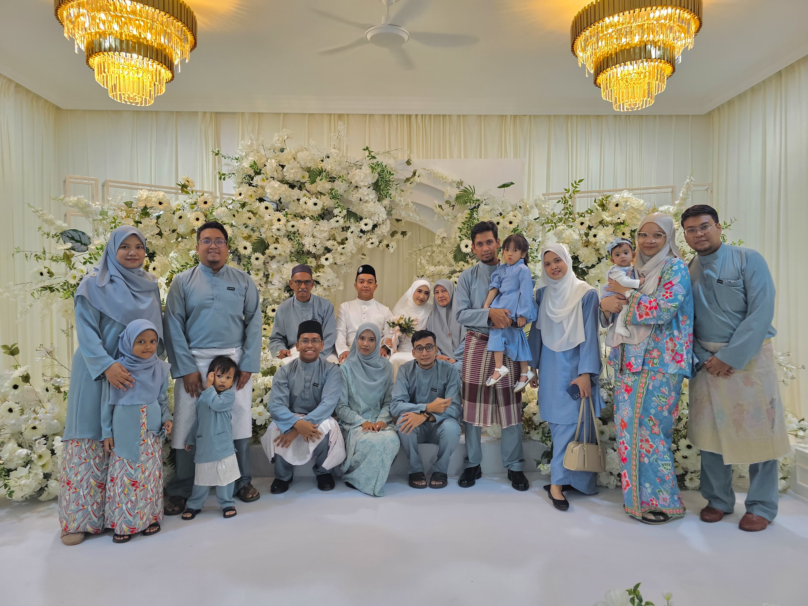

— Who I am
Hello! I'm Amier Zhafran — a Bachelor of Information Technology student at UiTM. My degree is focused on coding and building systems, and I'm passionate about how technology can solve real problems. I'm from Kelantan, Malaysia, and I love representing my home state wherever I go..
When I'm not coding or studying, you'll find me watching football — Liverpool is my favorite team, and I never miss a match. I also enjoy other sports like F1 and MotoGP, with Max Verstappen and Marc Marquez as my favorite drivers and riders. There's just something about speed, precision, and the fight for the podium that keeps me hooked.
I also love gaming — Dota 2 is my all-time favorite — and when I need to unwind, I listen to music. NewJeans is one of my favorite girl groups, and my favorite member is Danielle — her voice and energy always make my day better.
I come from a big family — I'm the youngest of 7 siblings. Growing up with so many older brothers and sisters taught me a lot about perspective, patience, and how to hold my own in a crowded room (or a chaotic team fight).
I'm still early in my journey, but I'm driven by curiosity, a love for learning, and a quiet determination to build things that actually matter — for real people, in the real world.